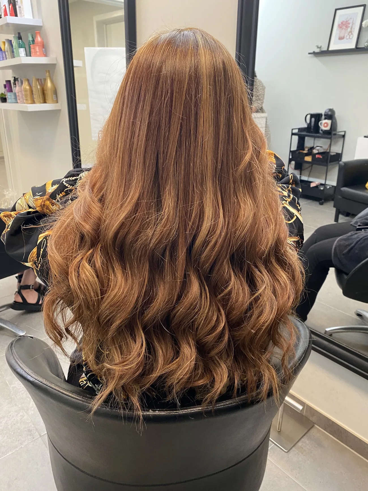
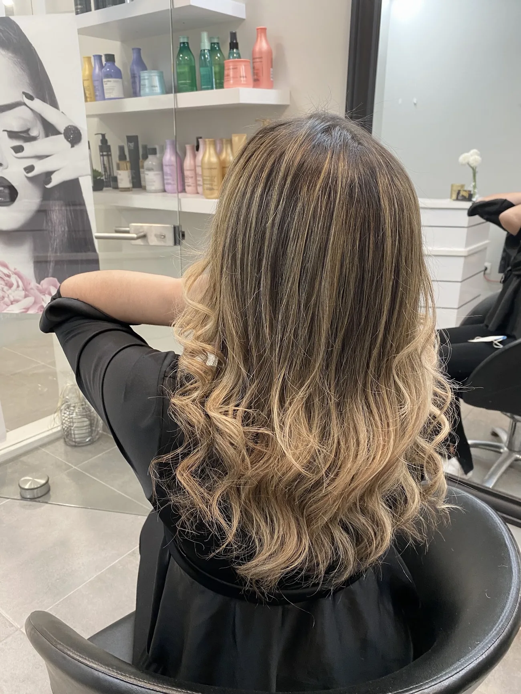
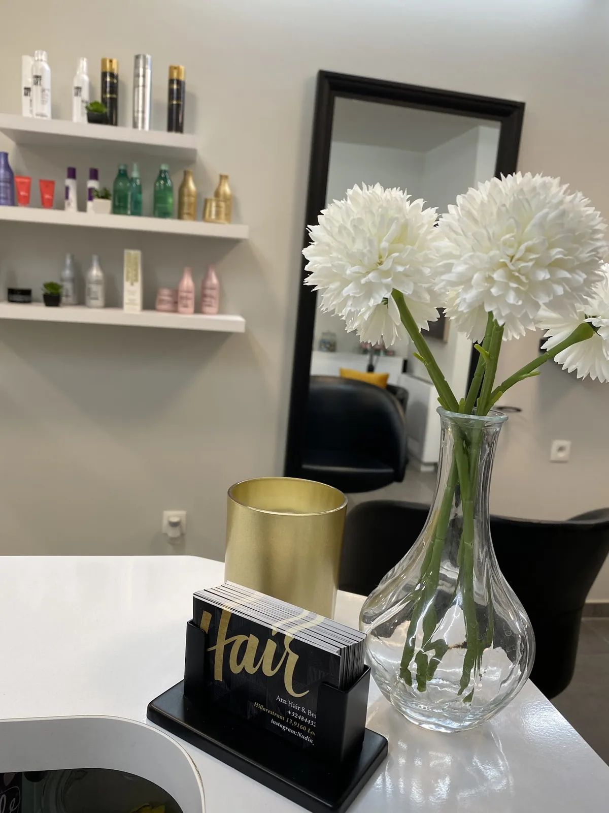
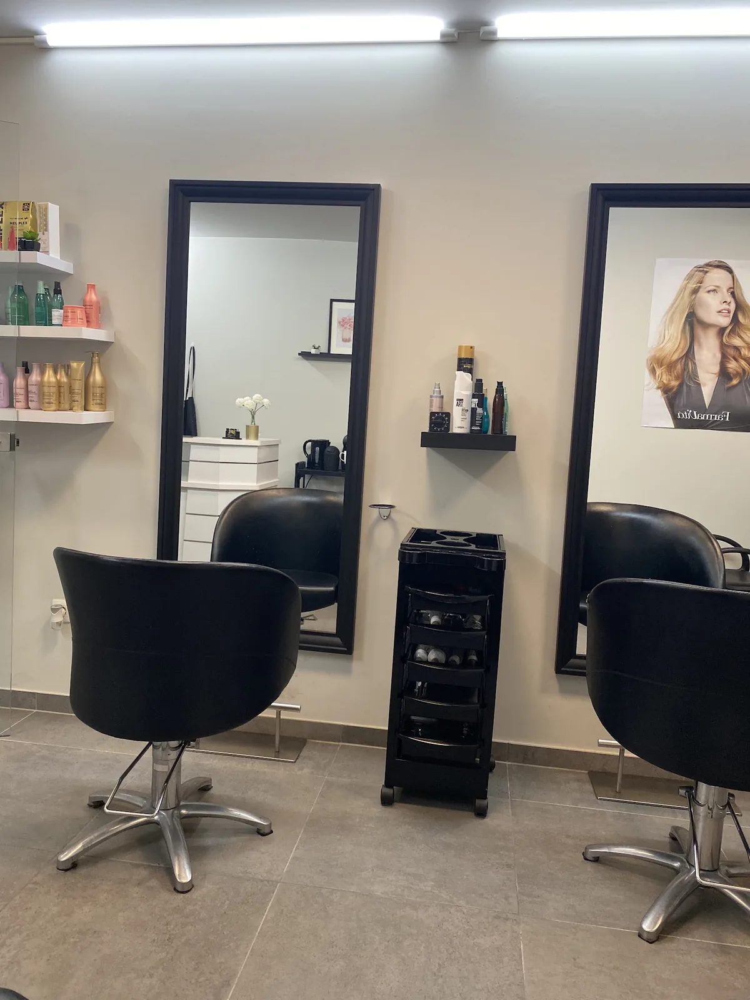
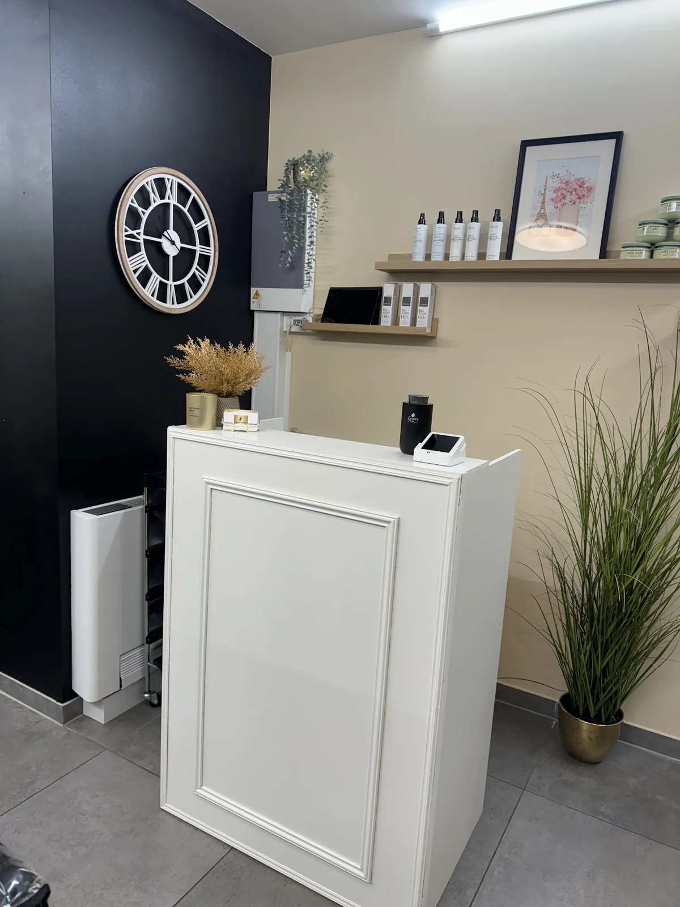
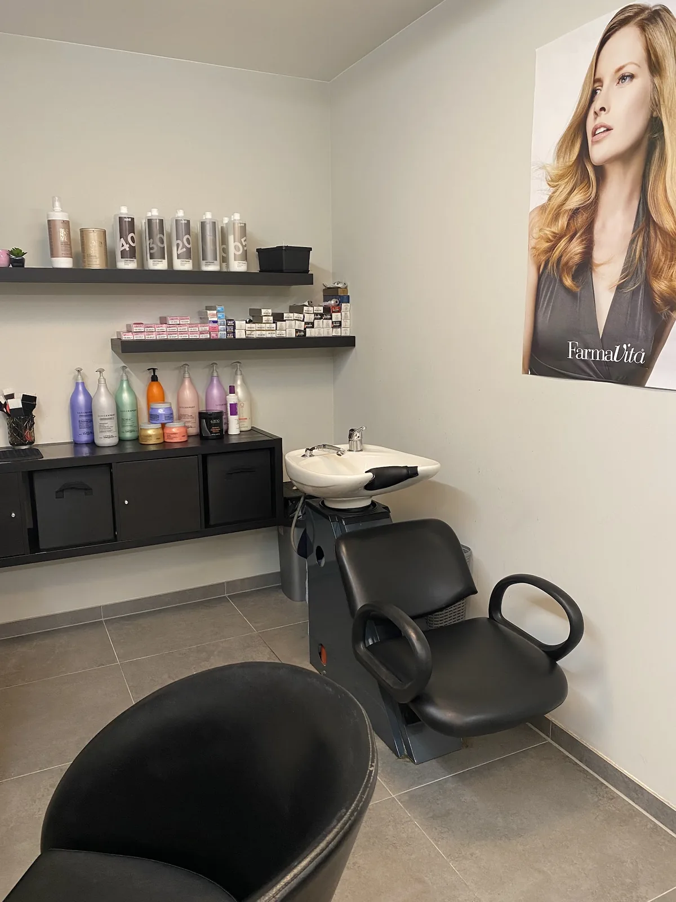
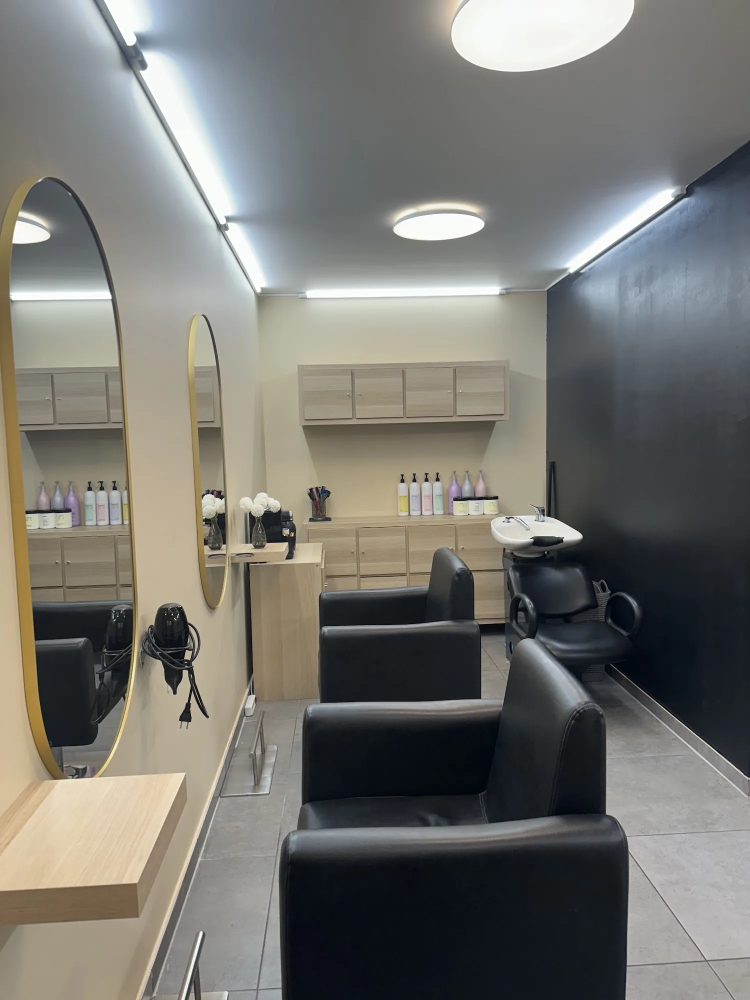

Neem plaats.
Knippen, kleuren, balayage of keratine bij Nadia en haar team. Je krijgt een koffie, eerlijk advies en de tijd.


Eerst praten, dan kleuren.
Een balayage, een nieuwe kleur of gewoon je uitgroei: Nadia en de dames kijken eerst samen met jou wat je haar aankan. Lukt het niet in één keer, dan hoor je dat ook.
"De dames hebben me eerlijk uitgelegd wat in één keer haalbaar was."
Samra B. op Google
De prijslijst.
Vaste prijzen zoals op Salonkee. Bij kleur hangt het af van je lengte en wat je wil.
Alle behandelingen en vrije uren zie je meteen op Salonkee.
Kies je momentEen moment voor jezelf.
Neem plaats, ontspan en geniet. Je krijgt een koffie, je mag gewoon vertellen wat je wil, en de kinderen mogen mee: ook zij gaan hier met een nieuwe snit naar buiten.



"Bij ANZ HAIR draait het niet alleen om mooi haar. Het is een moment voor jezelf."
Anz Hair, op Salonkeeop Google, en 5 uit 5 op Salonkee
"Ze luisteren echt wat je wilt, niets is te veel.."
Kimberly D.Google
"Een super lieve dame is Nadia"
Petra B.Google
"Ik kom speciaal van Antwerpen en zal dat blijven doen"
LimaSalonkee

Kom langs.
- Dinsdag10u tot 16u30
- Donderdag10u tot 16u30
- Vrijdag10u tot 16u30
- Zaterdag10u tot 15u
- Maandag, woensdag, zondagdicht
Adres
Hillarestraat 294
9160 Lokeren